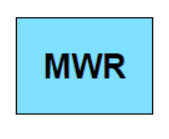
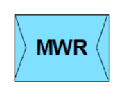
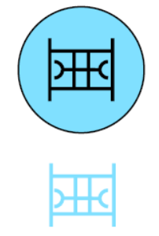
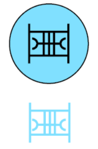
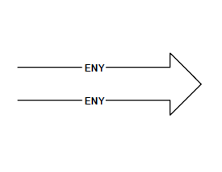
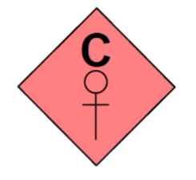

| ID | Significant Issue? | Image from Style Export | Image from Standard | Full SIDC | Hierarchy Code | Name | Geometry | Appendix |
| 187 | YES |  |  | SFGPUCFRS------ | 1.X.3.1.1.7.2.1 | SINGLE ROCKET LAUNCHER | POINT | D |
| 205 | YES |  |  | SFGPUCFMSW----- | 1.X.3.1.1.7.4.2 | SP WHEELED MORTAR | POINT | D |
| 235 | YES |  |  | SFGPUCRLL------ | 1.X.3.1.1.8.7 | RECONNAISSANCE LIGHT | POINT | D |
| 356 | YES |  |  | SFGPUSAW------- | 1.X.3.1.3.1.12 | MORAL WELFARE RECREATION (MWR) | POINT | D |
| 357 | YES |  |  | SFGPUSAWT------ | 1.X.3.1.3.1.12.1 | MWR THEATRE | POINT | D |
| 358 | YES |  |  | SFGPUSAWC------ | 1.X.3.1.3.1.12.2 | MWR CORPS | POINT | D |
| 532 | YES |  |  | SFGPEVATW------ | 1.X.3.2.2.1.1.1.1 | TANK LIGHT RECOVERY | POINT | D |
| 534 | YES |  |  | SFGPEVATX------ | 1.X.3.2.2.1.1.2.1 | TANK MEDIUM RECOVERY | POINT | D |
| 536 | YES |  |  | SFGPEVATY------ | 1.X.3.2.2.1.1.3.1 | TANK HEAVY RECOVERY | POINT | D |
| 687 | YES |  |  | SFUPNBR-------- | 1.X.5.4.2.2 | SEABED ROCK/STONE OBSTACLE OTHER | POINT | D |
| 688 | YES |  |  | SFUPNBW-------- | 1.X.5.4.2.3 | WRECK | POINT | D |
| 689 | YES |  | | SFUPNM--------- | 1.X.5.4.3 | MARINE LIFE | POINT | D |
| 690 | YES |  | | SFUPNA--------- | 1.X.5.4.4 | SEA ANOMALY | POINT | D |
| 835 | YES |  |  | GHCPMOLAE------ | 2.X.2.1.5.2.1.7 | ENEMY CONFIRMED | LINE | E |
| 836 | YES |  |  | GHCPMOLAT------ | 2.X.2.1.5.2.1.8 | ENEMY TEMPLATED | LINE | E |
| 854 | YES |  |  | GFCPMOOTF------ | 2.X.2.1.5.3.2.1 | FRIENDLY ATTACK POSITION | AREA | E |
| 933 | YES |  | | GFCPBSW-------- | 2.X.2.2.3.4 | FOXHOLE EMPLACEMENT OR WEAPON SITE | POINT | E |
| 1125 | YES |  |  | GHOPPCU-------- | 2.X.3.3.3.1 | RECRUITMENT (COERCED/IMPRESSED) | POINT | E |
| 1131 | YES | |  | GFOPPHG-------- | 2.X.3.3.6.3 | WRITTEN PROPAGANDA | POINT | E |